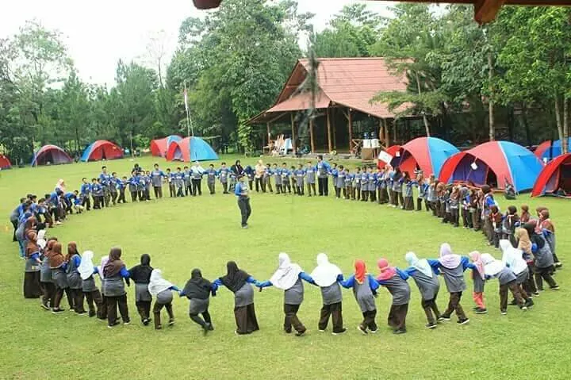

Aktivitas luar ruangan seperti team building, experiential learning, maupun fun games di daerah pegunungan sejuk Kota Batu selalu menawarkan keseruan yang menantang. Namun, karena bersentuhan langsung dengan medan alam, kelalaian dalam membawa perlengkapan dasar dapat mengganggu kenyamanan hingga kesehatan Anda selama agenda berlangsung.
Agar simulasi permainan berjalan maksimal tanpa kendala teknis dari perlengkapan pribadi, berikut checklist barang bawaan wajib yang perlu Anda persiapkan dari rumah:
1. Pakaian Ganti Berbahan Nyaman & Ringan
Saat beraktivitas di alam bebas, pilihlah pakaian olahraga yang longgar dan memiliki sirkulasi udara baik. Sangat direkomendasikan menggunakan kaus berbahan katun ringan atau jersey olahraga yang cepat kering (*quick-dry*).
- Hindari celana berbahan jeans ketat karena membatasi ruang gerak dan berat jika basah.
- Sediakan minimal 1 hingga 2 stel baju ganti cadangan jika agenda menyertakan permainan air atau berlumpur.
- Bawa jaket atau sweater mengingat suhu udara Kota Batu dapat menurun drastis di sore atau malam hari.
2. Alas Kaki Khusus Lapangan (Sepatu Olahraga/Sandal Gunung)
Medan outbound umumnya berupa rumput basah, tanah gembur, berpasir, atau jalur trekking berbatu. Memilih alas kaki yang salah dapat memicu slip hingga risiko cedera pergelangan kaki (*sprain*).
Gunakan sepatu olahraga (running shoes) yang memiliki sol karet bertekstur kasar/tidak gundul atau sandal gunung khusus petualangan. Jangan sekali-kali memakai flat shoes, high heels, atau sandal jepit kasual selama simulasi permainan dinamis.
3. Obat-obatan Pribadi Khusus
Meskipun tim fasilitator lapangan dari penyedia jasa outbound selalu membekali diri dengan kotak P3K darurat standar, setiap peserta yang mengidap riwayat penyakit khusus (seperti asma, alergi dingin, maag akut, atau penyakit jantung) wajib membawa obat pribadi dengan resep dokter.
Sampaikan juga kondisi medis khusus Anda kepada fasilitator pendamping sebelum rangkaian acara dimulai agar tim dapat memberikan pengawasan berkala yang lebih intensif.

Kondisi medan luar ruang yang bervariasi memerlukan perlindungan tubuh yang optimal.
4. Proteksi Ekstra Cuaca (Tabir Surya & Jas Hujan)
Cuaca di dataran tinggi sering kali sulit diprediksi dengan akurat. Untuk mengantisipasi sengatan terik matahari siang, aplikasikan tabir surya (*sunscreen*) pada wajah dan kulit lengan sebelum turun ke lapangan.
Sebaliknya, sediakan pula jas hujan plastik lipat (ponco) berukuran ringkas di dalam tas ransel Anda untuk mengantisipasi turunnya hujan secara mendadak di tengah jalannya simulasi permainan kelompok.
5. Botol Minum Ramah Lingkungan (Tumbler)
Dehidrasi adalah musuh utama dalam aktivitas fisik berkepanjangan. Guna mendukung kampanye pengurangan sampah plastik di area wisata alam, membawa botol minum isi ulang (tumbler) sendiri dari rumah adalah hal bijak yang wajib dipenuhi.
Panitia biasanya menyediakan pos pengisian air (*water station*) galon besar di sekitar lokasi untuk mempermudah Anda melakukan pengisian ulang kapan saja tanpa memproduksi sampah botol sekali pakai.
Kesimpulan
Kenyamanan berpetualang ditentukan dari seberapa baik persiapan Anda di awal. Dengan mencentang semua daftar bawaan di atas, Anda siap menikmati setiap momen *ice breaking* dan tantangan kelompok bersama rekan sejawat dengan aman, seru, dan penuh keceriaan!